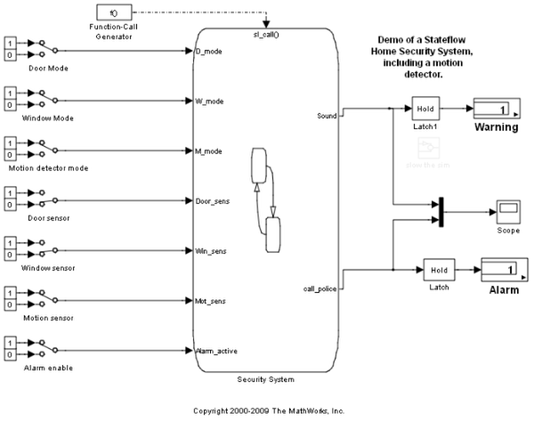
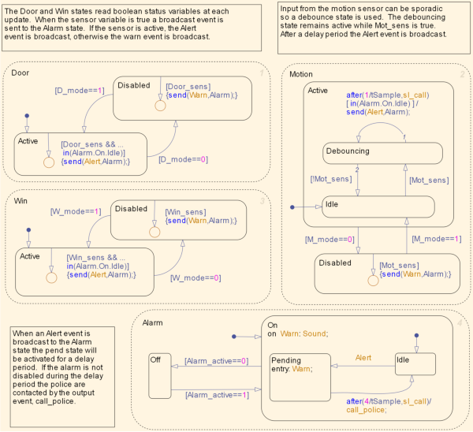

Modeling a Security System
This demo shows how to model a home alarm system including motion sensors. Like in modern alarm systems, if the system detects an intrusion, it allows a certain (small) time for the alarm to be disabled, otherwise it calls the police.
This model demonstrates using directed event broadcasts to coordinate between parallel states, the use of output events to drive external blocks and the use of the function call trigger to simulate a system which needs to be periodically triggered.
 